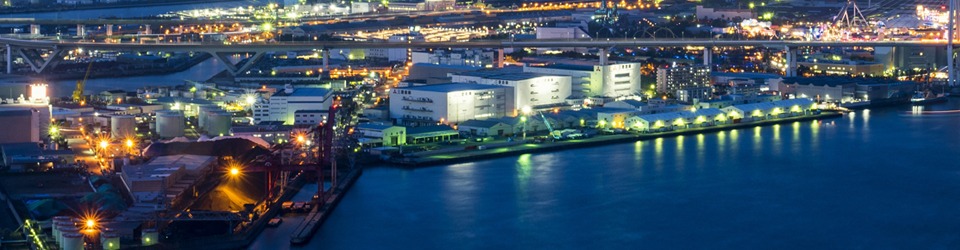
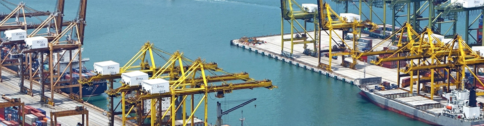
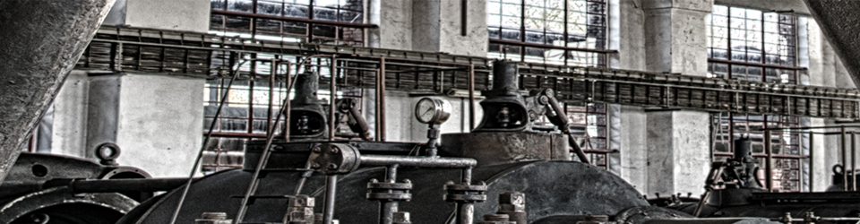
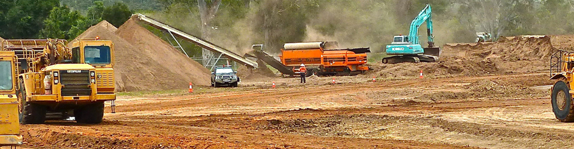

연혁
2000~현재
세계 정상을 향하여
- 2019
- 06월 1,348억원 규모 특수선 1척 수주(유럽지역 선사)
- 06월 LNG연료추진 초대형 원유운반선 기본 승인 획득 인증 수여식
- 04월 친환경 LNG연료추진선 첫 출항 성공
- 04월 1.1조원 규모 FPSO 1기 건조계약 체결(아시아지역 선사)
- 03월 5G 기반 Smart Yard 구축업무 협약식(SK텔레콤)
- 03월 제35회 정기주주총회
- 01월 2019년 경영전략회의
- 2018
- 12월 에지나 FPSO 첫 원유 생산 성공
- 12월 요한 스베드럽 P1 플랫폼 출항
- 11월 세계 최초 친환경 무용제 도료 상선 적용
- 05월 세계 최초 '공기윤활시스템' 초대형 컨테이너선 적용
- 04월 유상증자 완료(신주상장, 2억 4,000만주)
- 03월 세계 최초 스마트십 사이버 보안 선급인증 획득
- 2017
- 12월 대덕 선박해양연구센터 슬로싱 연구동 오픈
- 10월 에지나 FPSO 출항
- 06월 SHELL FLNG 출항
- 06월 ENI FLNG 수주
- 05월 세계 최대 컨테이너선(21,413TEU) 건조
- 04월 Ichthys CPF 출항
- 2016
- 11월 유상증자 완료(신주상장, 1억 5,912만주)
- 08월 기업전용 LTE망 개통
- 01월 S-EVM 시스템 오픈
- 2015
- 08월 성동조선과 경영협력 협약 체결
- 07월 Semi FPS 1기 수주(미주지역 선주)
- 06월 노르웨이 스타토일(Statoil)社로부터 해상플랫폼 2기 수주
- 03월 21,100TEU급 초대형 컨테이너선 수주
- 2014
- 10월 수중 선체청소로봇 개발
- 09월 국내 기자재업체와 LNG-FSRU 핵심장비 공동개발
- 05월 조선업계 최초 ISO 3834-2(용접품질관리 국제표준) 인증 취득
- 2013
- 11월 세계 최초 FLNG 진수 성공
- 06월 대형 잭업리그 시장 진출
- 04월 아시아 최초 LNG연료 선박 '에코누리'호 인도
- 04월 전사 감사나눔 운동 선포
- 02월 용접연구관 개관
- 2012
- 10월 삼성엔지니어링·英 아멕社와 해양 엔지니어링 합작사 설립
- 07월 세계 최대 해상풍력발전기 설치선 건조
- 02월 조선업계 최초로 ISO50001(에너지경영 국제표준) 취득
- 01월 호주 INPEX社와 세계 해양가스처리설비 CPF 건조계약(LOA) 체결
- 2011
- 11월 지식경제부 주관 녹색경영체제 인증 취득
- 09월 LNG선 화물창 조선업계 첫 독자 개발
- 08월 정보보호 국제 인증 ISO27001 취득
- 05월 세계최대 LNG-FPSO 건조 착수
- 05월 지속가능경영보고서 첫 발간
- 01월 '해적퇴치 통합시스템' 개발
- 2010
- 12월 미국 '프라이드社'로부터 드릴십 1척 수주
- 12월 '2010 세계일류상품' 선정(1만TEU급 컨테이너선, LNG-SRV)
- 10월 국내 조선업계 최초 탄소경영 우수기업 선정
- 09월 세계 최초 거제조선소에 차세대 와이브로 구축
- 08월 풍력발전기 생산 공장 준공
- 07월 원유시추설비 해상 합체 국내 최초 성공
- 05월 브라질 기술수출 1호선 성공적 진수
- 03월 세계 최대 LNG-FPSO 수주
- 01월 녹색경영 선포
- 2009
- 11월 대한민국 풍력발전설비 1호기 수출
- 11월 세계 최초 친환경 LNG 재기화 선박(SRV) 건조
- 07월 국내 최초 LNG선 친환경 여객선 개발
- 05월 풍력발전설비사업 진출
- 03월 세계 최대 반잠수식 원유시추설비 건조
- 02월 세계 최대 LNG선 4척 동시건조 성공
- 2008
- 09월 세계 최초 LNG-FPSO 수주
- 07월 세계 최대 크기의 26만6천 입방미터급 LNG선 건조
- 05월 대덕선박연구센터 모형선 300호, 모형 프로펠러 400기 달성
- 2007
- 12월 세계 최초 쇄빙유조선 건조
- 11월 세계 최초 극지용 드릴십 건조
- 10월 16,000TEU급 초대형 컨테이너선 개발
- 10월 테라블록공법 세계 최초 도입
- 09월 중국 롱청 블록공장 준공
- 05월 세계 최대 해상플랫폼 필턴B 완성
- 2001
- 12월 전기추진 LNG선 세계 최초 개발
- 11월 플로팅도크 도입
- 05월 미국 코노코사에 선박 기술 수출
- 03월 OHSAS18001 안전보건경영 시스템 인증 취득
- 2000
- 11월 9,000TEU급 세계 최대 컨테이너선형 개발 완료
- 11월 다목적 해양유전개발선FDS) 국내 첫 건조완료(SaiBOS社)
- 08월 대형 여객선 국내 첫 진수
- 03월 디지털시스템 사업 진출
1990~1999
질적 고도화와 사업구조의 정비
- 1999
- 12월 국가공인시험기관(KOLAS) 인증 획득
- 02월 고품격 맞춤형 주택 삼성 '쉐르빌' 탄생
- 1998
- 06월 지게차 사업 미국 클라크社에 매각
- 05월 중장비 사업 스웨덴 볼보社에 매각
- 1996
- 11월 대덕 모형시험 수조 및 캐비테이션 터널 완공
- 09월 미국철골 건설협회(AISC) 품질보증 획득
- 09월 건설, LRQA 14001 인증 획득
- 08월 국내조선업계 최초 크루즈선 LOI 체결
- 1994
- 12월 선박인도 100척 달성
- 10월 거제조선소 3도크 준공
- 06월 기술연수원 개관
- 01월 주식상장
- 1993
- 12월 기업공개, 국민기업으로 성장
- 04월 국내 최초 LNG탱크 극저온 시험 성공
- 03월 대덕중앙연구소 준공
- 01월 조선, LRQA ISO 9001 취득
1983~1989
종합중공업 메카로 성장
- 1985
- 12월 선박해양연구소 설립
- 06월 LRS(영국선급협회) 선각품질인증서 취득
- 01월 ABS(미국선급협회) 선각품질인증서 취득
- 1984
- 11월 해양플랜트 사업 진출
- 06월 DNV(노르웨이선급협회) 선각품질인증서 취득
- 1983
- 02월 건설, 주택건설사업 등록
- 02월 거제조선소 제2도크 준공
- 01월 중공업3사(삼성조선, 삼성중공업, 대성중공업) 통합
1974~1982
창업과 기반구축
- 1979
- 12월 거제조선소 제1도크 완공
- 09월 제1호 선박 강재 절단식과 건조 시작
- 1977
- 05월 대성중공업 인수
- 04월 삼성조선주식회사 설립
- 1974
- 08월 삼성중공업주식회사 설립